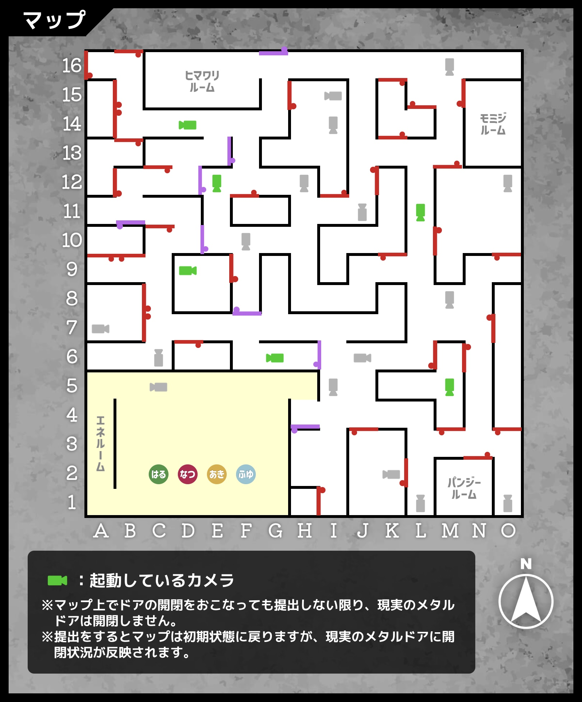
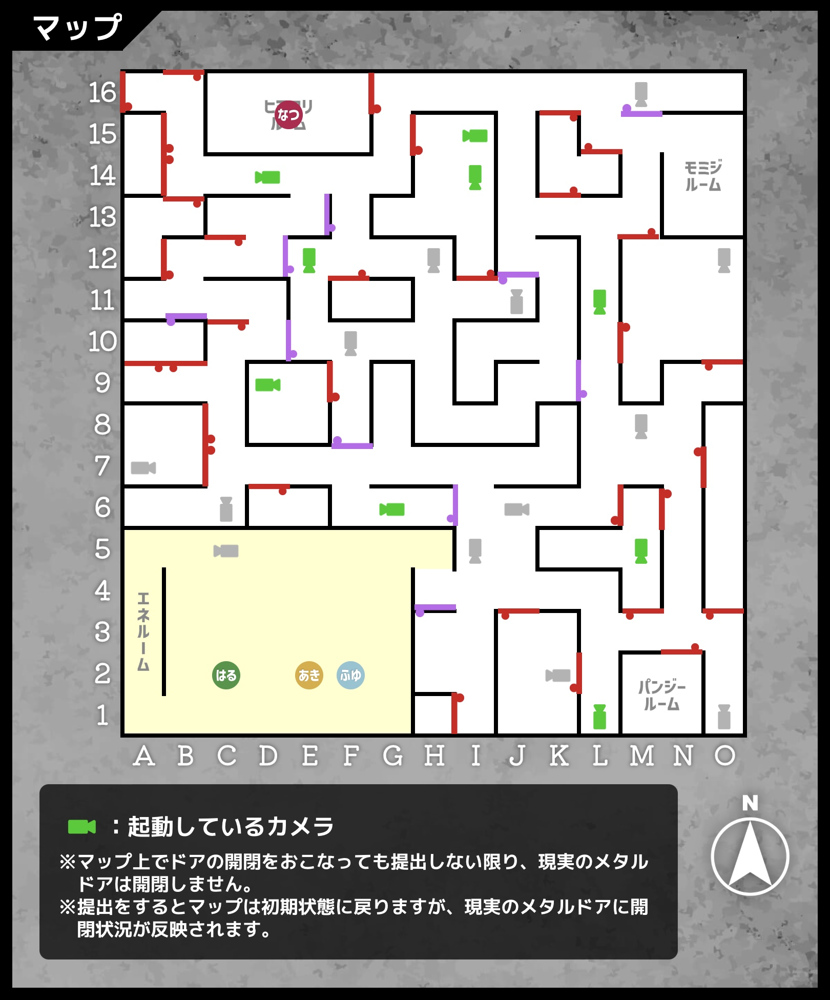
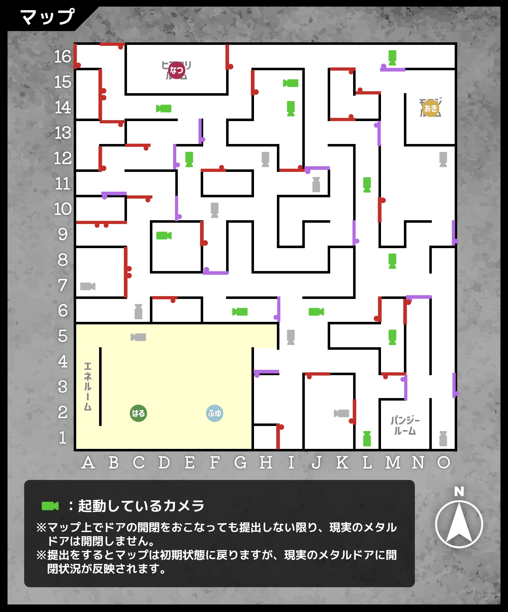

チームメンバー全員の合意を得てから読み進めましょう。
ヒント使用時間目安
ゲーム開始から20分経過：2nd-2に挑戦中の場合ヒントを見る
ゲーム開始から30分経過：3nd-2に挑戦中の場合ヒントを見る
ゲーム開始から40分経過：4th-2に挑戦中の場合ヒントを見る
ゲーム開始から50分経過：5thに挑戦中の場合ヒントを見る
カメラはマップ上で赤く示されたドアを透過することに気をつけて、通ることのできないルートを紙のマップに書き込みましょう。
ドアでルートを塞がないよう注意しましょう。
下記のようにドアを開きましょう。
東西南北の壁の条件は、それぞれミクロチップを一つ利用して解決できます。
扇風機を用いて風船を鳴らすことができます。
写真を見比べて、扇風機の風がどこに向かって吹いているか、位置関係を確認し、ミクロチップのどの機能を用いれば風船を鳴らすことができるか考えてみましょう。
また、扇風機付近の床の形状にも着目してみましょう。
進行機能に対象を「扇風機」、方角を「北」と書きましょう。
扇風機がある場所の段差により風鈴が鳴る場所で進行が静止します。
西の壁の情報を参考に計算すると、現在、上の金属板には25g、下の金属板には11g乗っています。
ミクロチップの機能を用いて、どちらも18gになるようにしましょう。
転倒機能に対象を「立方体」、方角を「東」と書きましょう。
立方体が下の金属板に落ちてどちらも18gになります。
ミクロチップの機能を用いることでパネルの文字を別のアルファベットにすることはできないでしょうか。パネルをよく観察してみましょう。
中央の「A」が少し左に寄っているようです。この状態で使えそうなミクロチップはないでしょうか？
分割機能に対象を「Aのパネル」と書きましょう。
Aの文字が分割されて「F」「I」となるため「OFFICE」という単語になります。
数式を成立させたいので増加機能を使いましょう。
しかし、8,4,2のどのパネルに増加を用いても計算式は成立しなさそうです。
増加機能に対象を「ーのパネル」と書きましょう。
漢数字、もしくは横に倒れたローマ数字が一つ増え、「8＝2×4＝8」という式が成り立ちます。
カメラはマップ上で赤く示されたドアを透過することに気をつけて、通ることのできないルートを紙のマップに書き込みましょう。
ドアでルートを塞がないよう注意しましょう。
下記のようにドアを開きましょう。
赤いエリアには四種類のアイテムがいくつかあり、それらが「しんごう」を表しています。
四つのいのししが「し」、三つのワインが「ん」、一つのゴリラが「ご」、二つの方位磁針が「う」を表してるとすると、
「そのアイテムの名前」をひらがなで書いたときの「その個数番目の文字」を表していると予想できます。
青いエリアにおいて、四つの方位磁針は「じ」、一つのうさぎが「う」を表しているので、残りの「あ」「い」「ょ」を作る方法を考えましょう。
写真に写っているもので「あ」を作ることはできません。
一文字目が「あ」のものが一つあれば解決できそうです。
あきに立ってもらいましょう。ロボにはその旨を伝えましょう。
赤いエリアにあるものを使いましょう。
「それがなくても赤いエリアの法則が成り立つもの」はないでしょうか？
進行機能に対象を「いのしし」、方角を「西」と書きましょう。
赤いエリアには三つのいのししが残るので、「し」と表されることは変わりません。
既に立方体が一つあります。
これを利用して「ょ」を表現しましょう。
分割機能に対象を「立方体」と書きましょう。
二つの直方体になるため、「ょ」を表すことができます。
四人が話している通り、今までと同じようにはいきません。
あきの提案の通り、モミジルームの様子を振り返ってみましょう。
モミジルームにある扉には全面に木製の条件ボードが貼られていました。金属製でないためカメラの視界を止めることができます。
M16のカメラの視界を防ぐためにモミジルームの入り口を開け、下記のようにドアを開けましょう。
ミクロチップは同じ機能を同じ対象に二度以上使えないことに注意しましょう。
サイコロは今１が上を向いていますが、最大で上の面を７にすることができます。
三つのミクロチップを利用しましょう。
まずはサイコロに転倒機能を使い適当な方角に倒しましょう。
さらに立方体の木箱に転倒機能を同じ方角に使うとさらに転がり、最初の数である１の裏、つまり６を出せます。
最後に増加機能をサイコロに作用させると７を出すことができます。
しかし、「はちの数」は蜂と鉢で８です。
条件ボードには「背景が白の黒い文字」が存在します。
増加機能の取扱説明書を見直してみましょう。
増加機能に対象を「さいころ」、さらにもう一つ増加機能に「条件ボード」と書き、
転倒機能に対象を「さいころ」、さらにもう一つ転倒機能に「直方体の箱」と書きましょう。
これにより、条件ボードの「はちの数」が「きゅうの数」に変わり（テニスボールが7個ある）、さいころは二度90度転がり、二つの数がどちらも７になります。
転倒機能の方角は同じであればどの向きでも大丈夫です。
金庫に書かれた条件がどのように満たされてないかをそれぞれの部屋の様子を振り返り確認しましょう。
それぞれのルームで起こったことをまとめて報告用紙に書きましょう。
西の壁の条件が満たされてないということは、金属板の上に乗ったものの重さが変わったようです。
風鈴を鳴らすために上下に首振りする扇風機を中央に動かしていました。
もし何か丸いものが部屋に存在していたら、風に乗って下の金属板の上にそれが乗り、重さに差が生まれます。
ポスターを読むと、アクチュエドールは死亡すると球体の墓石になることがわかります。
ヒマワリルームでなつが死亡していたようです。報告用紙に「なつ」が「死んで」いたと書き込みましょう。
「あいじょう」が「はいじょう」になったということは、あきがいたはずの場所に「は」と読めるものがあります。
一文字目が「は」であるものが一つあると考えるのが自然でしょう。
ポスターを読むと、アクチュエドールは死亡すると球体の墓石になることがわかります。
モミジルームであきが死亡していたようです。報告用紙に「あき」が「死んで」いたと書き込みましょう。
増加機能によって、イコールの上は「きゅうの数」となっています。
金庫に表示された条件から、現在「きゅうの数」が一つ増えたようです。
ポスターを読むと、アクチュエドールは死亡すると球体の墓石になることがわかります。
パンジールームでふゆが死亡していたようです。報告用紙に「ふゆ」が「死んで」いたと書き込みましょう。
新たに起動したカメラにより、はるも外に出ることができなくなりました。
なつ、あき、ふゆのいずれかの墓石をこの部屋まで持って来ましょう。
今できることを振り返ってみましょう。
ミクロチップは転倒機能と進行機能が残っていますが、その仕様上この部屋の中で触れられるものにしか対象にすることはできません。
部屋の中で触れられて、作用させると遠くの墓石を動かせるもの。それは建物そのものです。
建物に転倒機能を使うことで、任意の方角の壁の方向に重力を向かせることができます。
わかりづらい場合は、マップを実際に机の上に置き、そのまま立てるように90度回転させ起こして考えましょう。
建物に進行機能を使うことで、球体がその場にとどまるため、建物が進行する方向と相対的に逆方向に球体が進みます。
わかりづらい場合は、机の上に乗せたトレーにボールを乗せ、トレーを机の上で滑らせることをイメージしましょう。
三つの墓石の所在地からこの部屋までを最短距離で紙のマップで書き入れてみましょう。
転倒機能を使った後に進行機能を使うことでこの部屋まで持ってこれそうな墓石はないでしょうか？
ここから先は自分の力で考えましょう。